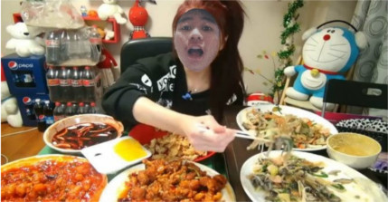

Hai Nama saya Muhammad Farhan Fauzan Pratama atau bisa dipanggil Farhan. saya lahir di Bogor 29 Juni 2001, saya terlahir sebagai anak tunggal. Saya sekarang tinggal di Dsn. Sukamantri
TK : Sewaktu TK saya bersekolah di TK Bhakti Pertiwi, dimana yang mengajarnya adalah tante saya sendiri jika beliau mengajar saya selalu berdiam diri di pojokan kelas untuk makan makanan saya bawa dari rumah agar tidak ketahuan beliau. Jika saya tidak berada di pojokan kelas saya selalu beralasan untuk ke toilet, tetapi saya tidak ketoilet melainkan ke kantin untuk membeli makanan atau hanya untuk membeli air minum.
SD : Dulu saya bersekolah di SDN Legok 1, sewaktu SD saya selalu dipanggil pahan karena sewaktu saya kelas 1 SD saya belum fasih mengucapkan huruf "R" dan sewaktu SD saya selalu memakan lollipop dan selalu makan makanan yang manis manis dan minumnya selalu yang agak masam, sewaktu SD saya selalu dibekali nasi oleh ibu saya dan nasinya selalu lebih banyak daripada lauknya, dari dulu saya hobi makan.
SMPN : Dulu saya bersekolah di SMP 1 Paseh dan di SMP saya sering dipanggil psikopat karena saya pernah memukul teman saya dengan balok kayu sehingga teman saya harus dijahit sebanyak 15 jaahitan dan teman saya sampai dirawat dirumah sakit selama 1 minggu. Setelah 3 bulan berlalu saya membenturkan teman saya ke tembok hingga keningnya berdarah dan harus dijahit sebanyak 5 jahitan. Dari situ saya sering di panggil psikopat tapi saya tidak merasa tergangggu jika ada orang yang selalu memanggil saya psikopat karena ada sebagian orang yang memanggil saya Farhan atau Aan, sewaktu SMP saya pernah mengikuti lomba menyanyi solo tingkat kecamatan untuk mewakili sekolah saya dan berhasil lolos hingga tingkat kabupaten. Sewaktu saya lomba di tingkat kabupaten saya tidak mendapatkan juara, tetapi itu tidak menjadi masalah karena disetiap pertandingan selalu ada yang kalah dan menang.
Menyanyi Hobiku adalah menyanyi, hobi daya menyanyi bukan berarti suara saya bagus tetapi menyanyi adalah media untuk mengekspresikan isi hati. Saya sering menyanyi di kamar mandi, depan kaca, di depan kelas, dan saya menyanyi jika saya merasa strees, badmood. Terkadang saya suka menyanyi ketika ada lagu yang berputar. Menurut saya menyanyi adalah sebuah ungkapan yang secara tidak langsung merupakan sebuah curhatan isi hati baik kepada teman, sahabat maupun seorang yang kita sayang. Menyanyi juga mempunyai manfaat seperti menghilangkan stress,membuat hati bahagia dan jika dikembangkan bisa menjadi sebuah bakat yang luar biasa.

Makan Sebenarnya makan adalah suatu kebutuhan makhluk hidup, tetapi jika makan terlalu banyak saya sering menganggap bahwa makan adalah hobi. Karena saya sering makan atau nyemil saya dapat menyimpulkan sendiri bahwa makan adalah hobi saya yang ke 2, saya mulai sering makan semenjak saya umur 4 tahun. Sekarang saya sering makan makanan yang cepat saji sebenarnya itu tidak baik untuk kesehatan tetapi saya selalu tergoda oleh baunya yang sangat menggoda, saya akui makanan cepat saji itu rasanya enak tetapi lebih enak makanan buatan orang tua sendiri terutama masakan ibu. dari dulu hingga sekarang makanan favorit saya adalah nasi goreng dan burger. Sewaktu SMP saya pernah makan nasi sebanyak 3 porsi dimana pada saat itu saya memesan nasi goreng spesial yang satu porsinya nasinya itu bercampur dengan mie, sayuran, kerang, cumi, sosis dan daging bagi saya itu cukup banyak dan mengenyangkan. Sewaktu kelas 10 saya pernah memesan burger yang berukuran jumbo dimana burger tersebut dilapisi oleh 4 beef, dengan diameter lebih kurang 9cm, bawang bombay, selada, saos tomat dan saos pedas. Sewaktu saya memakannya saya merasa kesulitan karena tidak muat dimulut sehingga saya harus memotongnya kecil kecil agar saya dapat memakannya.